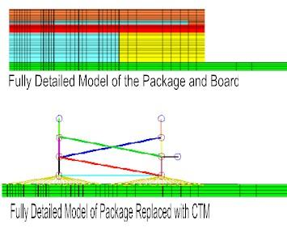
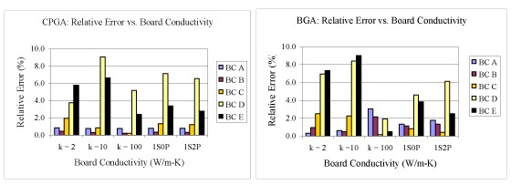
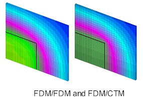
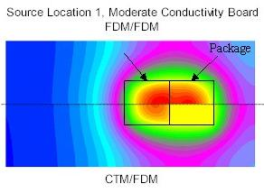
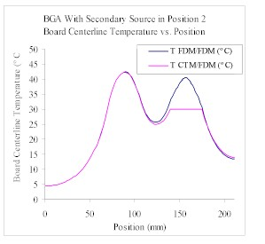
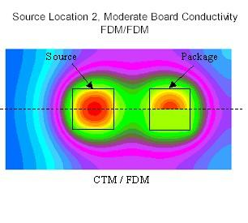
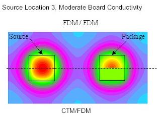
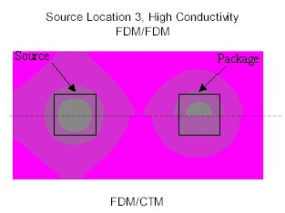

Steady State Compact Thermal Models at the Board and System Levels |
|
Project TeamAlfonso Ortega and Jason DeVoe Project SponsorAMD Motivation |
 |
|
The thermal characterization of electronic chip packages has become
increasingly important as the industry has evolved. Compact thermal
models allow the designer to solve for the average temperatures and
heat flows through each of the primary areas quickly and easily. They
are optimized to predict the maximum temperature of the chip (junction
temperature) to within 5% and the heat flows to within 10%. It is
advantageous to use these in board and system level simulation to
reduce computational needs. The applicability of using CTM’s at this
level is not well understood however. Project Description
 The
second part of our research investigated the effects of secondary heat
sources on the predictive ability. The proximity of the heat source to
the package and board conductivity was varied. The results are
displayed in isotherm plots (below). The contours generally match well
outside of the package area. The area under the package is
isothermalized by the technique used within the software to implement
the CTM’s in this environment. The temperature contours match better as
the distance between the heat source and the package increase. The
final isotherm (plotted on the same scale as the previous cases) shows
how the high conductivity board smooths the temperature contours. Recent Results
    
Publications
J. DeVoe, A. Ortega. "An Assessment of the Behavior of Compact Thermal Models of Electronic Packages In a Printed Circuit Board Level Environment," I-Therm 2002.
|
|
 PDF
PDF